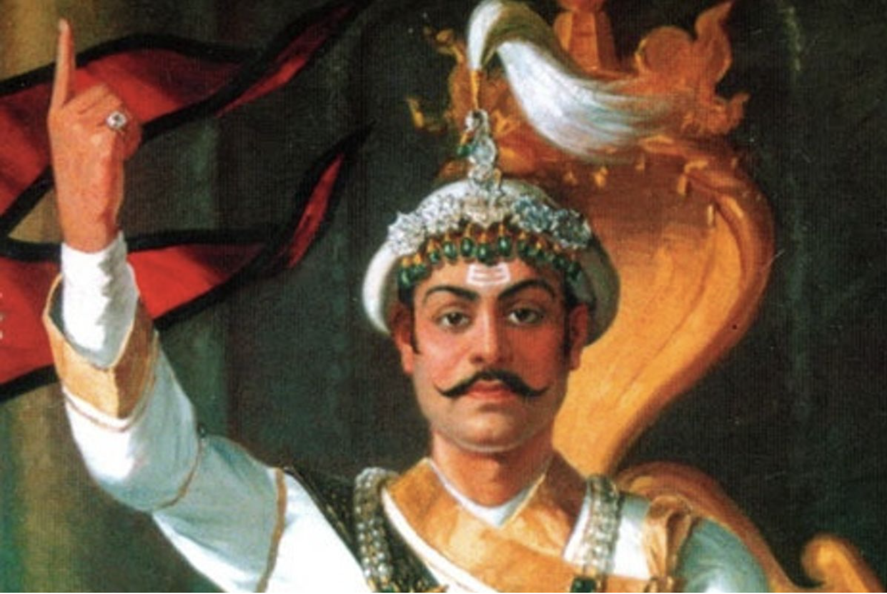

"Prithvi Narayan Shah, with his index finger raised, perfectly encapsulated the Panchayat's driving refrain of 'one king, one dress, one language, one nation.'"
Prithvi Narayan Shah
Prithvi Narayan Shah (1723-1775) was the first King of unified Nepal, known for his pivotal role in consolidating various small kingdoms into a single nation during the mid-18th century. Born in Gorkha, he led military campaigns against the Malla kingdoms of the Kathmandu Valley, employing a mix of strategic alliances and warfare. His reign marked significant administrative reforms and promoted cultural integration, helping to establish a unified Gorkhali identity. Prithvi Narayan Shah is celebrated as a foundational figure in Nepalese history, and his legacy continues to shape the nation's identity and governance.
Key Contributions
- Unification of Nepal: Prithvi Narayan Shah is credited with unifying the fragmented principalities and kingdoms of Nepal into a single, unified nation. Through a series of strategic military campaigns, he brought together various kingdoms under his rule, laying the foundation for the modern state of Nepal.
- Establishment of the Shah Dynasty: Prithvi Narayan Shah established the Shah dynasty, which would rule Nepal for over two centuries. This dynasty provided political stability and continuity during a pivotal period in Nepal's history.
- Expansion of Borders: Under Prithvi Narayan Shah's leadership, the borders of Nepal were significantly expanded, incorporating territories that were previously independent kingdoms or principalities. This expansion increased Nepal's geographical reach and strategic importance in the region.
- Strengthening of Kathmandu Valley: Prithvi Narayan Shah made Kathmandu the capital of unified Nepal and invested in the development of the city, enhancing its infrastructure and making it the political, economic, and cultural center of the country.
- Promotion of Nepali Language and Culture: Prithvi Narayan Shah promoted the use of the Nepali language and helped to solidify a distinct Nepali cultural identity, which was crucial for the nation-building process
- Foreign Policy and Diplomacy: Prithvi Narayan Shah pursued a policy of maintaining Nepal's independence and strategic autonomy, navigating the complex geopolitical landscape between the powerful empires of the time, such as the British in India and the Qing dynasty in China.
Quotes
“यो देश चार जात छत्तिस बरनाको फूलबारी हो”/"This country is a garden of four castes and thirty-six varieties.
Learn More
For more information, visit this link.